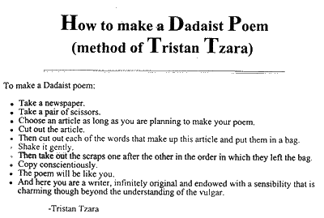
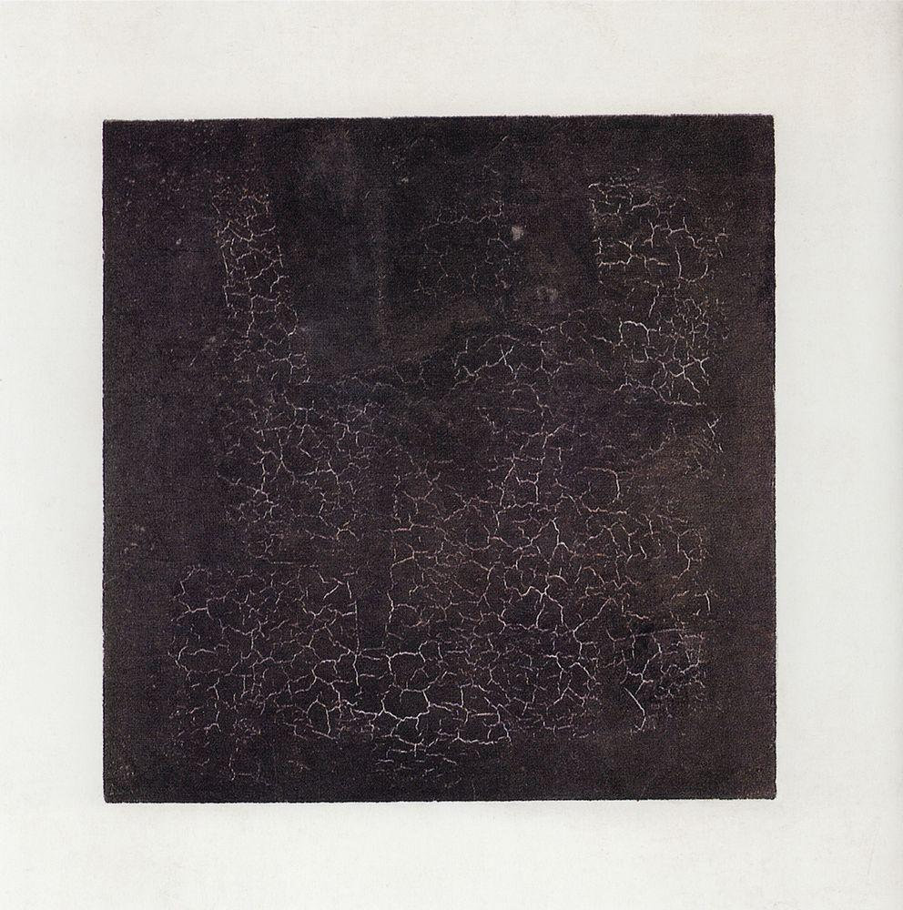
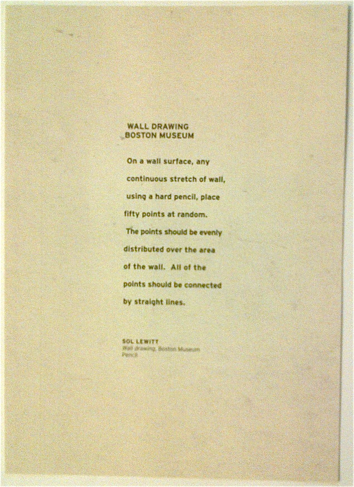
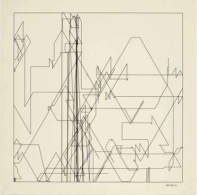

early computer art
how can art create knowledge?
touches subjects that science can not always express (eg emotions)
art can be a tool for science
explore something new
add knowledge
it's not transparent/objective
vilem flusser
poetry and prose
poetry gives a name to the unknown
prose dissects it
definition of computer art
"The basic characteristics of digital work are that it is programmable, iterative (open to being issued in new and changing versions), generative (giving rise to new expressions), and frequently networked." -johanna drucker
"the technique of providing a dynamic background to control the automatic evolution of a meaning." -john von neumann
unexpected
artists working:
- in the digital
- on the digital
computer art before the computer
can you have computer art without a computer?
you can have computer art with just humans
computers allow a quantitative
does quantity change the quality
computational art
dada
how to write a dada poem

focus on the interpretation of the viewer
suprematism
ideas and recipient > precursor to minimalism

kazimir malevich
constructivism
absurdism
conceptualism
"In conceptual art the idea or concept is the most important aspect of the work. When an artist uses a conceptual form of art, it means that all of the planning and decisions are made beforehand and the execution is a perfunctory affair. The idea becomes a machine that makes the art." - Sol LeWitt

sol lewitt
the person who draws it?
the whole system?
the person who comes up with it?
first computer art piece
christopher stratchey's love letters
1946
alan turing
now that we have so much quantity, how does that help us define what quality is?
computer art in europe
frieder nake

max bense - information aesthetics
manfred mohr
1965
computer art in the US
bell labs
ascii drawing
visual perceptions
research division of AT&T
opening the doors of perceptions
computer poetry
a house of dust
practice - instructional drawing
draw 30 points on a screen // connect each of these points to each other
draw enough mid-sized rectangles to fill to fill your canvas // half of these rectangles should be white // half of these rectangles should be black
post a screenshot on the github repo
for each of those drawings
and post your code, please
bonus: import the pdf library and export as PDF
resources/screenshots/_NAME_
result - instructional drawing
- what do you think?
practice - computed poetry
pick a theme you want
create a computer poem using basic grammar
post the result on the repo
result - computed poetry
what do you think?
conclusion
how does the computer affect our conception of art?
how does art affect our conception of the computer?
makes it more accessible (reproducible, looses something?)
quantity and quality
space for interpretation
it makes visible the inner workings of the computer